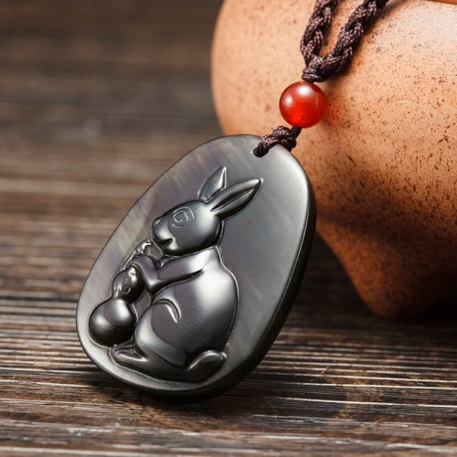

Tips：农历生肖运势即将进入2018年狗年，属猪2018年运势及运程抢先看，新年早开运，狗年求吉祥！
属猪2017年运势及运程详解
出生年份：2007、1995、1983、1971、1959、1947年
属猪人2017年事业运势
子玉风水大师点评：避重就轻 再三复核
生肖属猪的人，今年的流年运势欠佳，将会面对不少困阻，稍一不慎便很可能劳而无功！因为命宫中有「豹尾」凶星出现，警示今年容易招惹高层人士的掣肘和打压，必须好好设法化解；切勿硬碰硬，以免有如螳臂挡车而自招败亡！若能避重就轻，以柔制刚则可望冲破困境。此外，因有「吞陷」凶星照命，警示在努力工作之余，必须小心提防被人掠夺成果，以免今年空无所获！属猪的人今年处理业务必须加倍小心谨慎，签订订法律文件及买卖合同之时，务必再三复核，以免惹起无穷后患。因有「地丧」凶星照命，警示今年易惹官非，必须奉公守法，以免误罹法网。今年初春的两个月运势颇佳，属猪的人若能好好把握这难得的时机，今年尚有可为；秋季的三个月是一年运势最低沉的一段时期，必须打醒精神来处理业务；若能顺利通过，年尾的两三个月将会有意想不到的收获。今年工作进展欠佳的月份，是农历的三月、四月、六月、八月、九月以及十二月，在以上这几个月期间，处理工作业务，必须三思而行，谋定而后动！并且切勿行险侥幸，以免触犯官非。

属猪人2017年财运精准预测
子玉风水大师点评：慎防侵吞 切勿赌博
属猪的人，今年财星破损，正财及格财俱欠佳，故此理财必须加倍小心谨慎，以免钱财大量流泄不止。因有「吞陷」凶星照命，故此对于查核收支账目，必须亲力亲为，而且必须巨细无遗，以免被人瞒骗侵吞，损失惨重。此外，签订买卖合约之前，务必再三思量，以免因一时冲动而白白浪费了一大笔钱财。横财不利，今年赌博可免则免，孤注一掷更绝非所宜。今年财运低迷的月份，是农历的三月、四月、六月、八月及十一月；请紧记农历三月、四月及六月切勿赌博，忍手为宜。今年财运较佳的月份，是农历的正月、五月及十月，好好把握时机开源节流。
属猪人2017年健康运势
子玉风水大师点评：情绪波动 慎保胃肝
属猪的人，今年的健康情况平平，因为工作压力大，以致情绪波动亦甚大，不时受头痛失眠困扰！心病还必须心药医，故此必须尽量抛开心事、或出外旅行散心，切勿长久抑郁于心。今年肠胃及肝脏容易受损，除了小心注意饮食卫生之外，并需有足够休息，以免积劳成疾！因有「地丧」凶星照命，警示出门必须密切注意交通安全，以免无端惹来血光之灾。今年健康易出问题的月份，是农历的四月、六月、七月、八月、十一月及十二月
属猪人2017年爱情婚姻运势
子玉风水大师点评：患得患失 多表关怀
属猪的婚配查询：属猪的和什么属相最配
属猪的人，今年的感情发展较为飘忽，忽冷忽热，患得患失！必须看开一些，切勿太过执着，更切勿钻入牛角尖而难以自拔！今年在感情方面会有不少闲言闲语，切勿多加理会计较，因为这样便会剪不断面理还乱，愈理便会愈乱。无论工作如何忙碌，请紧记切莫冷落爱侣。今年感情发展较佳的月份，是农历正月、二月及十月，好好把握时机来培养情苗。
属猪的青少年2017年运势
今年读书考试容易分心，必须尽量摒除诸多杂念，否则学业成绩便会大倒退！此外，今年并会有自以为是的倾向，不肯接受师长教诲，慎防触犯校规而后患无穷。健康平平，切勿过劳，并切勿尝试任何毒品。
属猪的女性2017年运势
今年理财必须加倍小心谨慎，以免家庭经济出现问题！此外，家中将会有诸多口舌是非，必须尽可能及早平息纷争，切忌小事化大。属猪的少女，今年的感情发展若即若离，患得患失；必须看开一些，切勿感情用事。
属鼠人2017年开运吉祥物

属猪人2017年吉凶方位
属猪的人今年的三个生旺吉方，是东方、西北及西南；若能把睡床、工作台和沙发摆放在屋内这三个方位上，便可符合这生肖今年的风水趋吉之道，有助改善流年运程。倘若未能如此，最少亦要把这三种最重要的家具避开东南及东北，以符合避凶之道。以上所提出的吉凶方位，是纯以生肖属猪的人来计算；而与其它生肖无关，请勿混淆。
属猪人2017年幸运色
属猪的人今年的生旺颜色是黄、橙以及红色；若能利用这些颜色来布置房间、或配衬衣物，这会对改善流年运程大有帮助！属猪的人今年忌白色及灰色，最好能尽量避免使用。
属猪人2017年幸运数字
属猪的人今年的生旺数字是5及7。
抢先关注：属猪的人2018年运程
不同猪年出生的属猪人2017年运势详解
2007年属猪的人2017年运程
2007年出生的人，今年读书考试容易分心，必须尽量摒除杂念，遵守师长教诲，以免触犯校规而后患无穷。
1995年属猪的人2017年运程
1995年出生的人，今年感情忽冷忽热，患得患失，切勿自钻牛角尖。密切注意交通安全，切勿贪一时之快。
1983年属猪的人2017年运程
1983年出生的人，今年工作压力甚大，而且备受制肘和排挤，必须懂得避重就轻；切勿硬碰，以免两败俱伤。83年属猪人今年若要开运解灾，增旺运势，可佩戴本站周易专家团队精心设计的属猪2017吉祥物吊坠，该圣品图案为一只玉兔怀抱葫芦，采用高档彩虹眼黑曜石精雕而成，寓意您在2017年才名旺盛，福禄优厚，遇事从容，受人追捧。事业上俸禄频增，财运上食禄多多，爱情上和谐美满。亦可同时佩戴增庆堂属猪六合贵人手链，更具功效。开车人士，可在爱车挂上一串增庆堂富贵如意琉璃挂件，以保行车安全。
1971年属猪的人2017年运程
1971年出生的人，今年易惹官非，必须奉公守法，以免误罹法网。切勿冷落爱侣，以免因而感情破裂。71年属猪人今年若要开运解灾，增旺运势，可佩戴本站周易专家团队精心设计的属猪2017吉祥物吊坠，该圣品图案为一只玉兔怀抱葫芦，采用高档彩虹眼黑曜石精雕而成，寓意您在2017年才名旺盛，福禄优厚，遇事从容，受人追捧。事业上俸禄频增，财运上食禄多多，爱情上和谐美满。亦可同时佩戴增庆堂属猪六合贵人手链，更具功效。开车人士，可在爱车挂上一串增庆堂富贵如意琉璃挂件，以保行车安全。
1959年属猪的人2017年运程
1959年出生的人，今年财星破损，投资可免则免。肠胃及肝容易受损，必须小心护理！并需慎防积劳成疾。59年属猪人今年若要开运解灾，增旺运势，可佩戴本站周易专家团队精心设计的属猪2017吉祥物吊坠，该圣品图案为一只玉兔怀抱葫芦，采用高档彩虹眼黑曜石精雕而成，寓意您在2017年才名旺盛，福禄优厚，遇事从容，受人追捧。事业上俸禄频增，财运上食禄多多，爱情上和谐美满。亦可同时佩戴增庆堂属猪六合贵人手链，更具功效。开车人士，可在爱车挂上一串增庆堂富贵如意琉璃挂件，以保行车安全。
1947年属猪的人2017年运程
1947年出生的人，今年健康平平，易受头痛失眠困扰，尽量看开一些。谨慎处理收支账目，以免被人侵吞。
属猪人2017年每月运势
农历正月 公历2017年2月4日至3月4日
本月春风得意，财源广进
属猪的人今运势欠佳，但年初这个月却相常吉利，春风得意，属猪的人若想今年不致空无所获，似必须好好把握道难得的好时机。在这段期间最重要的，是必须主动与人沟通交流，打成一片，尽紧消除磨擦冲突。这个月财星高照，财源广进，但可惜这些均是浮财；若不妥为保管，便很可能只是财来财去而难以积聚。新春与亲友欢聚，饮食必须尽量节制，以免肠胃受损。自有奇逢应早春，月中会有一段难忘的邂逅。
农历二月 公历2017年3月5日至4月3日
本月收敛锋芒，明哲保身
这个月的运势反复向下，月中将会出现不少阻滞，工作进展亦会随而迟缓下来，而且人事纷争有增无已！在这期间最重要的，是必须收敛锋芒，尽量保持低调；请谨记切勿招摇树敌，以免令自己的事业前途平添不少障碍！此外，必须明哲保身，尽量远离是非圈。财运平平，正财收入尚算稳定，但横财则切勿贪求！出门在外慎防小偷。健康良好，但需慎防受人传染。这个月易与异性擦出感情火花，情投意合。
农历三月 公历2017年4月4日至5月4日
本月诸多是非，以柔制刚
因有「地丧」凶星照命，这个月的运势相当崎岖，切勿轻举妄动，以免摔得一蹶不振！工作压力甚大，而且很可能备受上司欺压以及同事排挤。在这段期间最重要的，是切勿针锋相对，以免两败俱伤！必须设法以柔制刚，忍辱负重以静待时机。财星破损，理财必须量入为出，以免出现经济危机；赌博更是可免则免，以免输得焦头烂额。感情方面这个月将会出现不少闲言闲语，很可能因而导致感情破裂。
农历四月 公历2017年5月5日至6月4日
本月强敌环伺，沉着应变
这个月的运势依然低迷，工作上的困阻并未消减，而人事纷争却愈演愈烈，严重阻碍工作进展！此外，公司内外皆有强敌环伺，虎视眈眈。在这段期间最重要的，是面对逆境必须尽量保持冷静，沉着应变，以免因为惊惶失措而被对手有机可乘。财运每下愈况，理财稍一不慎，便将会大量流泄不止！投资及赌博暂时忍手为宜。健康欠佳，肠胃及肝脏易出问题，必须注意保养；一有毛病，便必须立即延医诊治。
农历五月 公历2017年6月5日至7月6日
本月气象一新，多劳多得
因为命宫中吉星拱照，这个月的运势气象一新，积压已久的晦气一扫而空，必须好好把握这难得的好时机！工作上的困阻消除，而且灵感涌现，处事得心应手，在这段期间最重要的，是凡事必须亲力亲为，自求多福，多劳多得！切勿依赖他人，以免日后将会被人暗中掠夺成果。财运大有起色，投资有利可图；但可惜横财反复，时好时坏，故此只能小注怡情，这个月易得人缘，应酬繁忙，但切勿因而冷落爱侣。
农历六月 公历2017年7月7日至8月6日
本月风云骤变，慎防血光
这个月的运势一落千丈，因有「豹尾」凶星出现在命宫中，警示工作方面将会出现不少矛盾冲突，容易招惹高层人士的掣肘打压。在这段期间最重要的，是必须懂得避重就轻，而切勿硬踫硬，以免有如螳臂挡车而招来惨痛后果。这个月易惹血光之灾，故此出门必须密切注意安全，特别需要注意交通安全。财运低迷，投资及赌博均可免则免，以免血本无归。感情易起风波，必须互谅互让来小心维系，切忌恶言相对。
农历七月 公历2017年8月7日至9月6日
本月沟通包容，居安思危
这个月的运势略为回升，但仍然相当波动，故此工作进展并不畅顺，必须提高警惕，以应付突然而来的变化；并应避免与同事产生误会、或甚至引发摩擦冲突！在这段期间最重要的，是切勿与人斤斤计较，必须多些沟通，多写包容。财运大有起色，将会有多方面的收入；但必须居安思危，及早积谷防饥，以免年尾出现经济困难。健康平平，努力工作之余，必须尽量多休息，以免肝脏受损。月尾密切注意家居安全。
农历八月 公历2017年9月7日至10月7日
本月欲速则不达，切勿急进
因有「吞陷」凶星照命，这个月的运势甚为崎岖，风雨飘摇，切勿轻举妄动，以免一子错而满盘皆落索！在这段期间最重要的，是要慎防被相熟的人出卖，以致工作或经济成果被暗中侵吞掠夺，徒劳无功！此外，并需慎防商业圈套。财运急剧逆转，正财横财俱不宜憧憬，必须尽量节省开支，以免现金周转困难。健康并无大碍，但需密切注意家居安全，特别要注意防火和防盗。感情进展有如逆水行舟，易退难进。
农历九月 公历2017年10月8日至11月6日
半月枝节横生，慎防出错
这个月的运势反复向上，上半个月仍会有诸多困阻，但下半个月便会开始出现曙光，渐入佳境。工作进展枝节横生，很多看似即将顺利完成的项目，却往往临尾出现阻滞！在这段期间最重要的，是处事必须倍加小心，切勿疏忽大意，慎防因中途出错而功败垂成。财运虽然略有起色，但投资及赌博暂时均以忍受为宜！此外，钱银交收务必再三复核，以免忙中出错。这个月神经紧张，情绪容易激动，必须尽量放开怀抱。
农历十月 公历2017年11月7日至12月6日
本月时运来转，乘时奋发
这个月因有吉星拱照，所以运势大有起色！工作困阻大部分均已陆续消除，而人事纷争至此亦暂告一段落，正是乘时奋发的大好时机！在这段期间最重要的，是处理业务必须对事不对人，以免工作尚未展开，便已惹来一大串不必要的人事纷争，以致工作进展严重受阻。财星高照，属猪的人若要今年投资创业，这个月将相当有利。健康良好，身心康泰，但需慎防受人传染。这个月感情出现转机，将揭开新的一页。
农历十一月 2017年12月7日至17年1月4日
本月谦虚待人，从善如流
这个月的运势反复向下，虽然偶有阻滞，但只要小心从事，便不会出现大问题。工作进展先盛后衰，月初颇为畅顺，但月中开始因为人事纷争而导致停滞。在这段期间最重要的，是必须谦厚待人，切勿盛气凌人而惹人反感！此外，并需从善如流，尽量聆听接受别人意见来加以改善。财运依然相当畅旺，但可惜临近月尾便变得无以为继。这个月健康并无大碍，但易惹血光之灾，慎防摔伤或被利器刺伤或割伤。
农历十二月 公历2018年1月5日至2月2日
本月易惹官非，远离损友
属猪的人今年运势欠佳，年尾这个月因为命宫中有「地丧」凶星出现，警示非但会有诸多困阻，而且亦惹官非！在这段期间最重要的，是必须奉公守法，切勿行险侥幸，以免误堕法网。此外，并需尽量远离损友，以免因受其拖累而误入歧途。财星破损，钱财易泄难聚，签订买卖合约之时务必再三思量，以免因一时冲动而白白浪费了一大笔钱。这个月健康欠佳，请紧记切勿流连风月，以免破财伤身，遗害无穷。
2018年运程十二生肖运程：属猪2018年运势及运程
读过此篇文章的网友还读过：